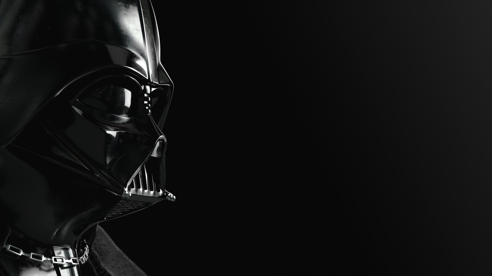
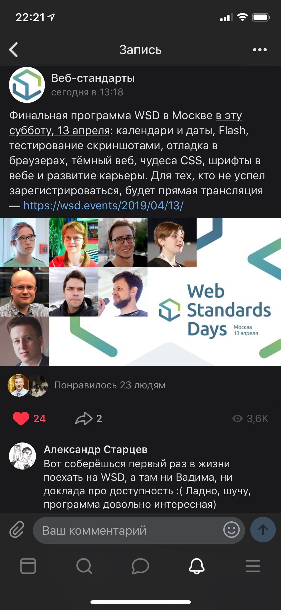
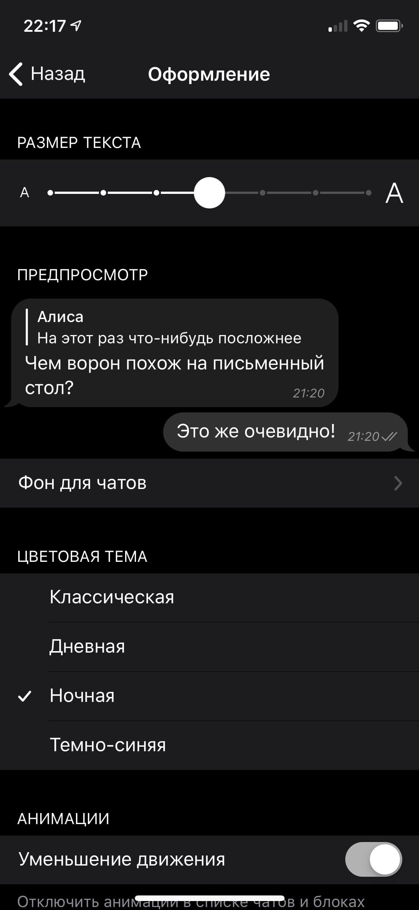
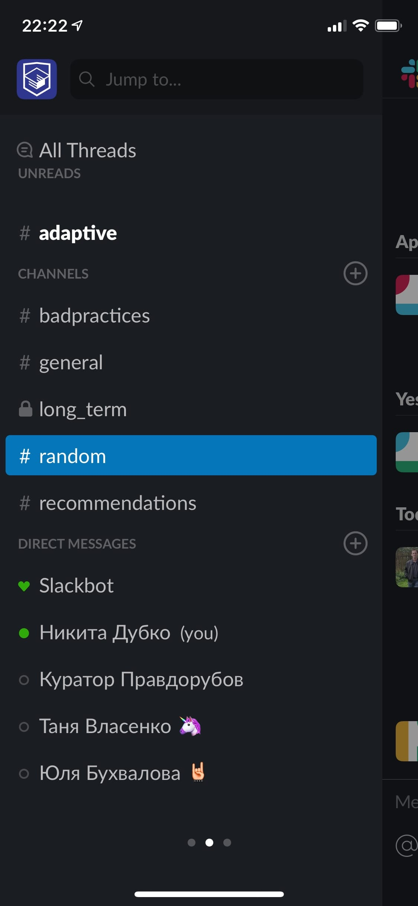
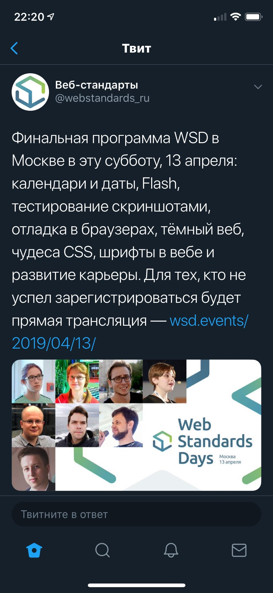
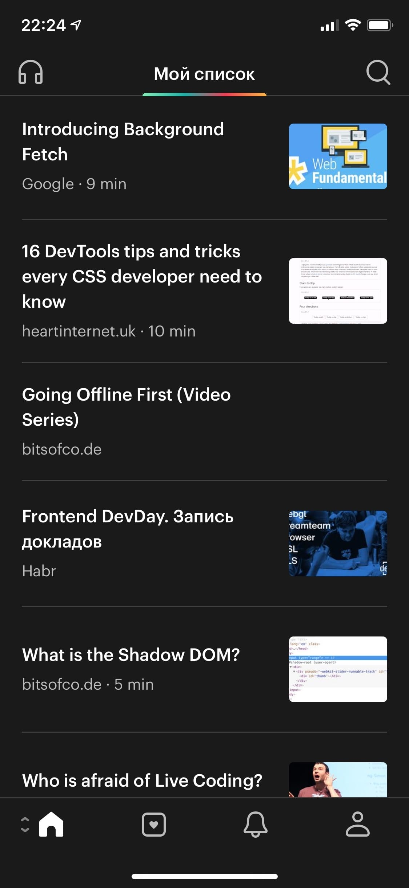
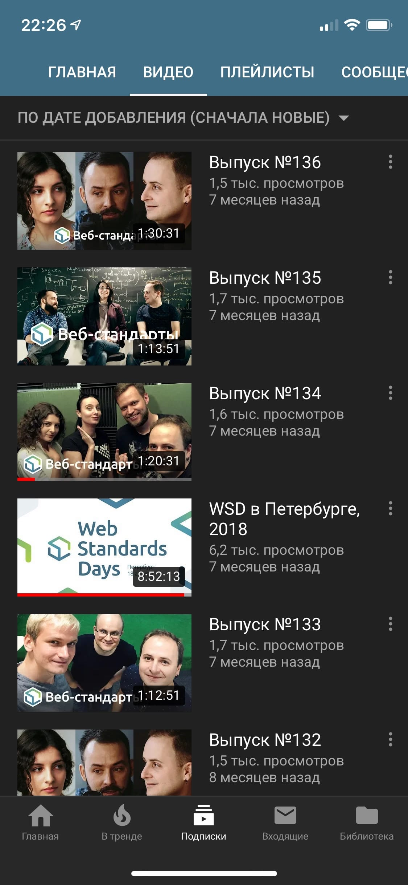
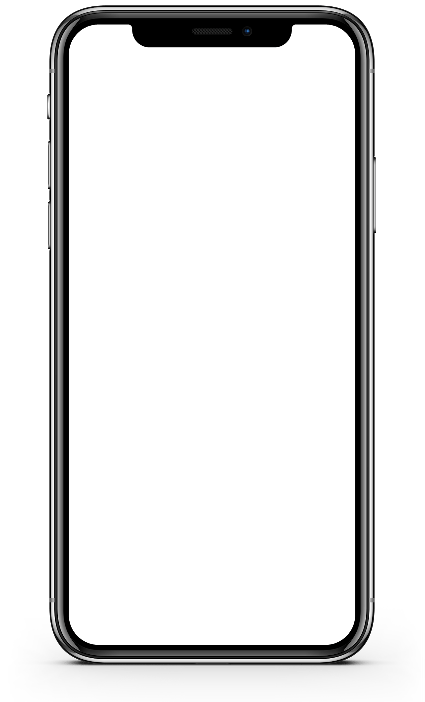

Тёмная сторона веба
Никита Дубко
разработчик интерфейсов, Яндекс

Кто я?
- доброжелюбный бородач
- разработчик интерфейсов, Яндекс
- соорганизатор MinskCSS и MinskJS







свет ☀️
⬇
распад пигмента 🧪
⬇
нервный импульс ⚡️
зрачок не знает, куда ему деться
садится зрение у работающих ночью без света
глаз тупо меньше устаёт, когда темно
внезапно — энергосбережение
https://dev.by/news/twitter-poluchil-energosberegayushii-tyomnyi-rezhim
в итоге тёмные темы заполонили интерфейсы
как сделать хорошую тёмную тему?
https://uxplanet.org/light-or-dark-ui-tips-to-choose-a-proper-color-scheme-for-user-interface-9a12004bb79e
1. определить цель
- премиальность
- дать пользователю выбор
- ночной режим
когда актуален?
- почитать перед снов
- использовать для разработки
- медиа-сервис (тоже пред сном)
популярность из-за футуристичности
https://habr.com/ru/post/94441/
но производители задумались
3. учитывайте особенности зрения
изображения — как быть с ними
тонкие белые шрифты хуже читаются из-за контраста
типографика на кинопоиске онлайн
чисто чёрного цвета в природе не существует
для ночной темы не должно быть и абсолютного белого
для чёрного не так много контрастных цветов, сложнее со ссылками
https://www.webdesignerdepot.com/2009/08/the-dos-and-donts-of-dark-web-design/
чёрный цвет поглощает у белого — больше места между элементами
увеличить размер шрифта — так увеличится место между элементами
https://uxplanet.org/dark-side-of-ui-benefits-of-dark-background-12f560bf7165
4. используйте свет для направления взгляда
пример Яндекс.Музыка — выше светлее
5. придётся продумать айдентику
- монохромная
- белая подложка
ОС можем менять цветопередачу
чистый чёрный на amoled — провал в темноту
матрицы имеют разные цветопередачи, более холодные в дешёвых мониторах
любой цветной элемент влияет на серый рядом с ним
7. пусть тему нарисует дизайнер
темизация в прошлом (много вариантов)
https://medium.com/@mwichary/dark-theme-in-a-day-3518dde2955a
помните про изображения — они могут выжигать глаза
http://markdotto.com/2018/11/05/css-dark-mode/
можно выбирать особые изображения для тёмной темы
не забывайте про JS-графику (графики)
проверка на контрастность AA, AAA в devtools
https://webformyself.com/nochnoj-rezhim-dlya-vashego-sajta-chast-1/
когда включать?
- пользователь включает сам
- автоматически
- пользователь сам выбирает, автоматически или сам
:root {
background-color: #fefefe;
filter: invert(100%);
}
* {
background-color: inherit;
}
img:not([src*=".svg"]), video {
filter: invert(100%);
}
https://medium.com/web-standards/a-theme-switcher-96174d95be75
где хранить настройки?
- сервер
- localStorage
- cookie
по времени закатов и рассветов
https://github.com/mourner/suncalc
https://developer.mozilla.org/ru/docs/Web/API/Geolocation/Using_geolocation
по предпочтению в системе
https://webkit.org/blog/8718/new-webkit-features-in-safari-12-1/
https://engineering.razeware.com/dark-mode
https://twitter.com/_developit/status/1082728265087897600?s=21
https://css-tricks.com/accessible-svgs-high-contrast-mode/
https://developer.apple.com/documentation/safari_release_notes/safari_12_1_release_notes?language=objc
https://developer.mozilla.org/en-US/docs/Web/API/DeviceLightEvent/Using_light_sensors
https://developer.mozilla.org/en-US/docs/Web/API/Battery_Status_API
функция цвета текста от фона
https://github.com/darkreader/darkreader
https://twitter.com/tomayac/status/1105598210750537728?s=21
когда тёмные темы нельзя?
- приложение используется на свету
- приложение для детей (санпин или гост)
- приложение для максимальной аудитории (остегматизм https://tatham.blog/2008/10/13/why-light-text-on-dark-background-is-a-bad-idea/)
- когда у вас бардак в коде
итоги
- думайте о пользователе
- не будьте на хайпе просто потому что
- дизайн — для дизайнеров
- тестируйте тёмные темы в боевых условиях
что почитать?
- https://lite.mst.edu/media/research/ctel/documents/LITE-2003-04.pdf
- Искусство Цвета — Йоханесс Итэн
- Теория цвета
- Илья Бирман про тёмный фон
- Воруй как художник